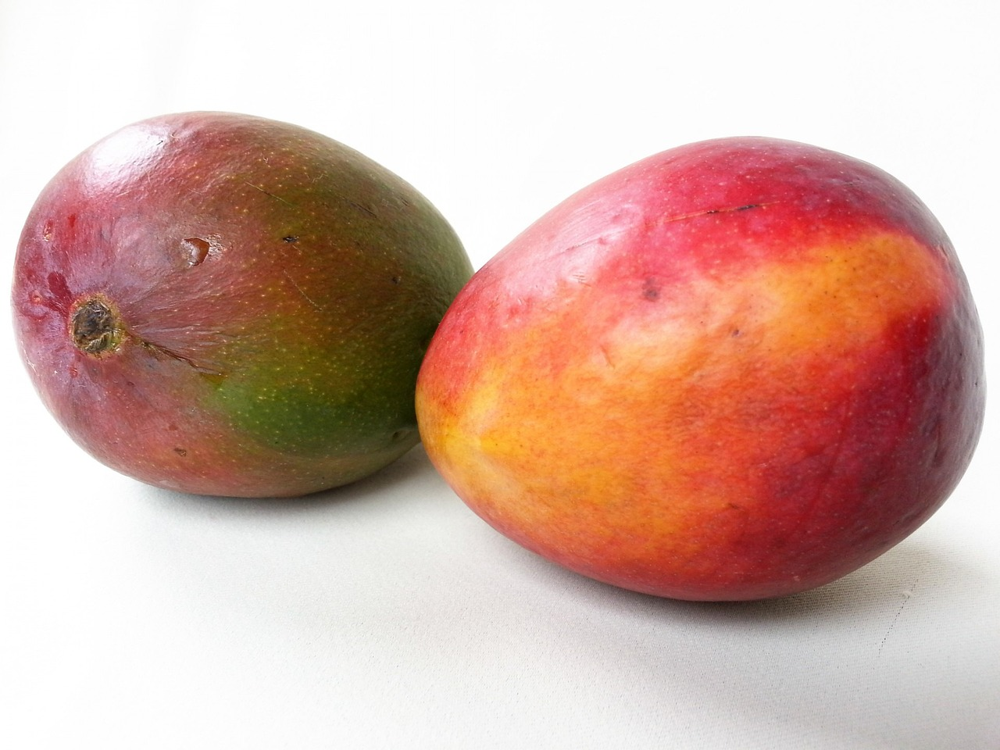

A manga é uma fruta que ajuda a combater inflamações, fortalecer o sistema imunológico e reduzir o risco de doenças cardiovasculares, porque possui muitos nutrientes como vitamina A, vitamina C, magnésio, potássio e polifenóis como mangiferina, canferol e ácido benzoico.
Por outro lado, a manga tem bastante frutose, que é um tipo de açúcar encontrado naturalmente na fruta e que, quanto mais madura, maior será a sua quantidade. Por isso, essa fruta não é aconselhada para quem precisa perder peso, especialmente se for ingerida muito frequentemente, pois é uma fruta que contém muitas calorias.
A manga é muito versátil e inclusive a sua casca pode ser consumida, ao natural ou em preparações como suco, geleia, vitamina, salada, molho. Além disso, a folha da manga também pode ser usada no preparo de um chá para fins medicinais. Veja para que serve o chá de folha de manga.
Os principais benefícios da Manga
- 1. Melhora o funcionamento do sistema digestivo: A manga é uma fruta excelente para melhorar a prisão de ventre pois é muito rica em fibras solúveis que agem absorvendo água do trato digestivo formando um gel que ajuda a regular o intestino. Além disso, a mangiferina presente na manga age como um laxante natural aumentando o movimento do intestino e facilitando a eliminação das fezes. A mangiferina também protege o fígado, melhora a ação dos sais biliares que são importantes para a digestão de gorduras e auxilia no tratamento de vermes e infecções intestinais. Além disso, a manga contém amilases que são enzimas que degradam os alimentos facilitando sua absorção e, por isso, regula e melhora a digestão.
- 2. Combate a gastrite: A manga possui na sua composição a mangiferina e a benzofenona que tem efeito protetor para o estômago por ter ação antioxidante, reduzindo os danos nas células do estômago, além de diminuir a produção de ácido do estômago e, por isto, pode auxiliar no tratamento da gastrite ou úlcera gástrica.
- 3. Ajuda a controlar a glicemia: Alguns estudos mostram que os polifenóis como o ácido gálico, ácido clorogênico e ácido ferúlico podem estimular a produção de insulina e reduzir os níveis de açúcar no sangue e da hemoglobina glicada que é um indicador de diabetes, podendo ser um importante aliado no tratamento do diabetes. No entanto, a manga deve ser consumida de forma moderada e em pequenas porções ou pode ser utilizada junto com outros alimentos ricos em fibras. Além disso, a melhor forma de aproveitar as propriedades da manga para ajudar a controlar a glicemia é consumir esta fruta mais verde, pois a manga madura pode exercer o efeito contrário e aumentar a glicemia.
- 4. Tem ação anti-inflamatória: A mangiferina, o ácido gálico e a benzofenona presentes na manga têm propriedades anti-inflamatórias sendo muito úteis no tratamento de inflamações do intestino como a colite ulcerativa ou doença de Crohn, por exemplo, pois reduz a produção de substâncias inflamatórias como as prostaglandinas e as citocinas. Além disso, a ação anti-inflamatória da manga no intestino, ajuda a prevenir os danos celulares que podem causar câncer no reto e no intestino.
- 5. Tem ação antioxidante: A vitamina C e os compostos polifenólicos como mangiferina, quercetina, canferol, ácido gálico e ácido cafeico possuem ação antioxidante, combatendo os radicais livres e reduzindo os danos nas células. Assim, a manga ajuda a prevenir e combater doenças associadas ao stress oxidativo causado pelos radicais livres como a aterosclerose, infarto, derrame cerebral, diabetes ou câncer.
- 6. Combate o câncer: Alguns estudos utilizando células de leucemia e do câncer da mama, da próstata e do intestino mostram que os polifenóis, principalmente a mangiferina presentes na manga possuem ação antiproliferativa, reduzindo a proliferação das células do câncer. Além disso, os polifenóis têm ação antioxidante, que agem combatendo os radicais livres que causam danos nas células. Entretanto, ainda são necessários estudos em seres humanos que comprovem esse benefício. Conheça mais alimentos que ajudam a prevenir o câncer.
- 7. Protege contra doenças cardiovasculares: As fibras solúveis presentes na manga ajudam na redução do colesterol ruim e dos triglicerídeos, que são responsáveis por formar placas de gordura nas artérias, pois diminui a absorção de gorduras provenientes da alimentação. Assim, a manga melhora o funcionamento das artérias e ajuda a evitar infarto, insuficiência cardíaca e derrame cerebral. Além disso, a mangiferina e a vitamina C têm ação anti-inflamatória e antioxidante que ajudam reduzir os danos nas células, mantendo os vasos sanguíneos saudáveis, e os polifenóis, o magnésio e o potássio ajudam relaxar os vasos sanguíneos e a controlar pressão arterial.
- 8. Fortalece o sistema imune: A manga é rica em nutrientes como as vitaminas A, B, C, E e K e folato que estimulam a produção de glóbulos brancos que são células de defesa essenciais para prevenir e combater infecções e, por isso, a manga ajuda a fortalecer o sistema imune. Além disso, a mangiferina estimula as células de defesa do organismo a combater infecções.
- 9. Combate a herpes labial: Alguns estudos mostram que a mangiferina presente na manga possui ação contra o vírus da herpes labial por inibir o vírus e impedir que se multiplique, podendo ser um importante aliado no tratamento da herpes labial. Além disso, a mangiferina também pode inibir a multiplicação do vírus do herpes genital. Entretanto, ainda são necessários estudos em humanos que comprovem esse benefício.
- 10. Mantém a saúde dos olhos: A manga mantém a saúde dos olhos por possuir antioxidantes como luteína e zeaxantina que agem como bloqueadores dos raios solares prevenindo os danos nos olhos causados pela luz do sol. Além disso, a vitamina A da manga ajuda a prevenir o surgimento de problemas nos olhos como os olhos secos ou a cegueira noturna.
- 11. Melhora a qualidade da pele: A manga tem vitamina C e A que são antioxidantes que ajudam a combater os radicais livres que causam envelhecimento da pele. A vitamina C também age aumentando a produção de colágeno que é importante para combater a flacidez e as rugas da pele, melhorando a qualidade e o aspecto da pele.
Tabela de informação nutricional
A tabela a seguir traz a composição nutricional de 100g de Manga
| Componentes | 100g de Manga |
| Energia | 59 calorias |
| Potássio | 120 mg |
| Magnésio | 13 mg |
| Cálcio | 9 mg |
| Folatos | 36 mcg |
| Água | 83,5 g |
| Proteínas | 0,5 g |
| Gorduras | 0,3 g |
| Carboidratos | 11,7 g |
| Fibras | 2,9 g |
| Carotenos | 1800 mcg |
| Vitamina A | 300 mcg |
| Vitamina B1 | 0,04 mg |
| Vitamina B2 | 0,05 mg |
| Vitamina B3 | 0,5 mg |
| Vitamina B6 | 0,13 mg |
| Vitamina C | 23 mg |
| Vitamina E | 1 mg |
| Vitamina K | 4,2 mcg |